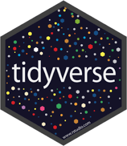
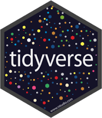

R for beginners: Introduction to data visualization with R and ggplot2: from data to publication-quality figures
2024-11-01
Part1 Welcome
Dates, time & location
- Dates:
- First edition: April 9 & 11, 2024
- Second edition: November 5 & 7, 2024
- Time:
- 9:30-13:00
- 9:30-13:00
- Location:
- IDIBAPS
Instructor
Senior bioinformatics consultant at Clarivate.
Prerequisites
The workshop is open to anyone with no (or little) prior programming experience.
Attendees must however feel comfortable enough with their own computer to install programs (and debug their installation, when needed) and locate folders and files.
Learning objectives
Attendees will:
- Gain a high-level understanding of data import, manipulation and graphing with R and RStudio.
- Be able to produce and save a variety of publication-quality graphs (among others: boxplots, scatter plots, barplots).
Learning outcomes
- Identify and use RStudio panels (console, scripts, folders and files panels).
- Locate useful resources to learn more and know where to seek help.
- Import data from files into R.
- Manipulate and prepare (filter, select) data.
- Produce graphs:
- Create a plot from “recipes”.
- Change basic parameters (color, font size, point shape, title, etc.).
- Export high-quality graphs in different formats (pdf, jpeg, png).
What this workshop is NOT:
- A programming class.
- A design class.
What this workshop is:
- An introduction to R and to RStudio software.
- An introduction to data visualization.
- A teaser to - hopefully - make you want to learn how to program in R!
Tentative agenda
Day 1 & 2: 9:30-13:00.
~15-20’ break around 11:15-11:30.
- Welcome and set up
- Introduction to R and RStudio (Posit)
- Paths and directories
- R basics
- Data import
- ggplot2:
- Introduction, concept
- Scatter plots
- Barplots
- Boxplots
- Fine-tuning font
- Colors
- Faceting
- Data filtering and wrangling:
- select
- filter
- rename
- More ggplots
- Exercises
If time allows, we may see some of the following, according to the interest of the group:
- More advanced data manipulation:
- the pipe operator
- from wide to long format
- Interactive plots with {plotly}
- Heatmaps with {pheatmap}
- Demo volcano plots

 
